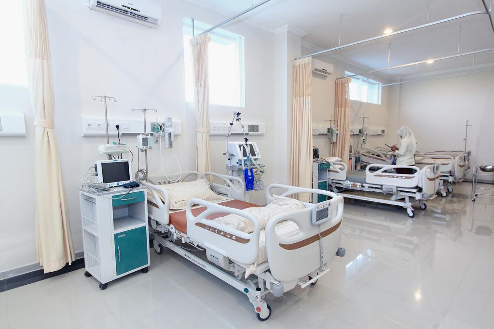

Poli Umum
Pelayanan kesehatan dasar untuk semua kalangan.
Poli Gigi
Perawatan gigi dan mulut oleh dokter gigi profesional.
Poli Anak
Pelayanan kesehatan anak usia 0–12 tahun.
Poli Kandungan
Pemeriksaan kehamilan, USG, dan konsultasi kebidanan.
Unit Gawat Darurat (UGD)
Layanan darurat 24 jam untuk kasus medis mendesak.
